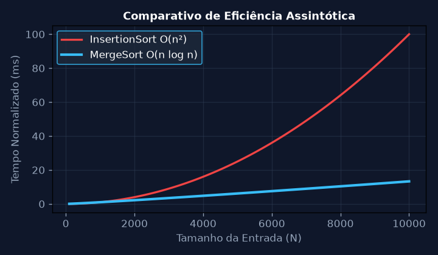
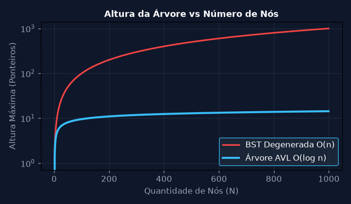
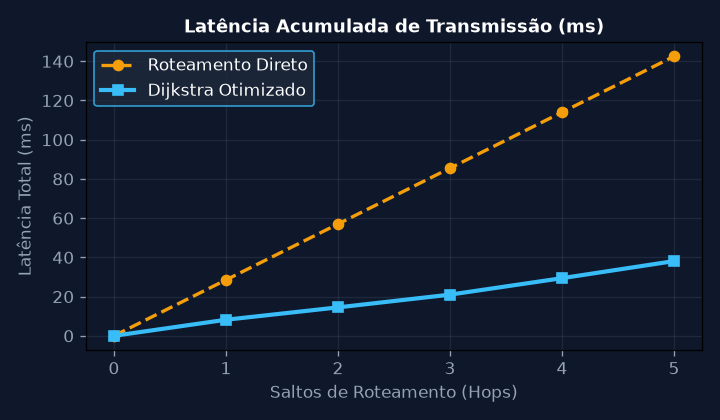
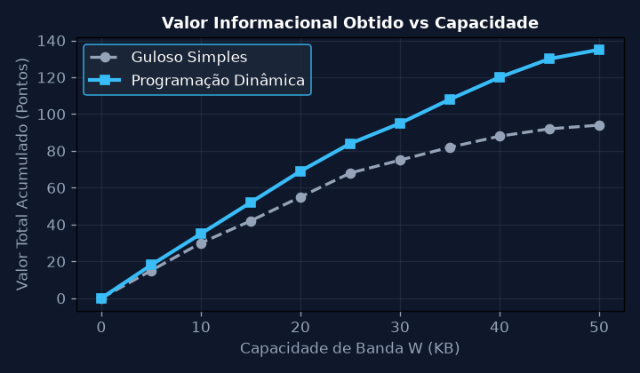
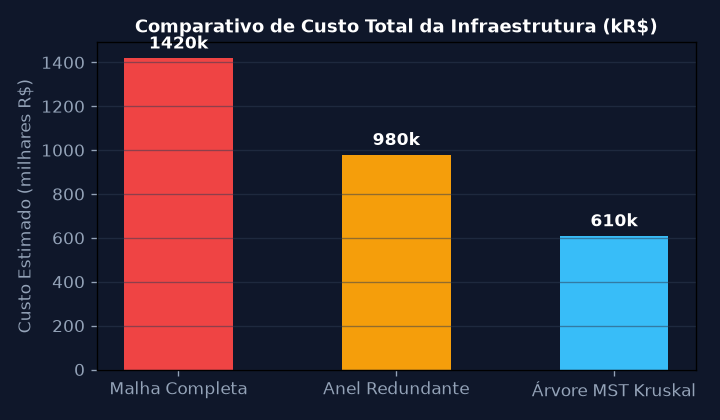
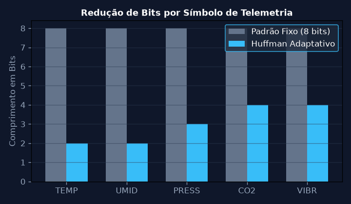

Análise de Complexidade Assintótica e Algoritmos de Ordenação
Implementar e comparar o desempenho temporal e espacial dos algoritmos de ordenação QuickSort e MergeSort frente ao InsertionSort para vetores de tamanhos N = [1.000, 10.000, 50.000, 100.000] inteiros aleatórios.
💎 Resolução Algébrica Passo a Passo (Padrão Symbolab)
A relação de recorrência para o MergeSort divide o vetor em 2 metades e intercala linearmente: T(n) = 2T(n/2) + cn
Temos a = 2, b = 2 e f(n) = cn. Como \log_b(a) = \log_2(2) = 1, e f(n) = \Theta(n^1), estamos no Caso 2 do Teorema Mestre.
T(n) = \Theta(n^{\log_b a} \log n) = \Theta(n \log n). O número total de operações para n = 100.000 é \approx 1,66 \times 10^6.
Para o InsertionSort com T(n) = \Theta(n^2), para n = 100.000 temos 10^{10} operações, representando uma aceleração teórica de mais de 6.000 vezes.
Para conjuntos massivos de dados no ambiente Natura de telemetria, o algoritmo MergeSort assegura estabilidade temporal determinística O(n \log n).

Árvores Binárias de Busca Balanceadas (AVL) e Rotações
Projetar a estrutura de dados de uma Árvore AVL para indexação de sensores em tempo real. Demonstrar formalmente as rotações simples à esquerda/direita e dupla esquerda-direita para restabelecer o fator de balanceamento.
💎 Resolução Algébrica Passo a Passo (Padrão Symbolab)
Um nó v está balanceado se seu fator de balanceamento FB(v) pertencer ao conjunto \{-1, 0, +1\}.
Após a inserção de chaves consecutivas crescentes, a subárvore direita atinge altura h + 2, gerando FB(v) = -2 (caso Direita-Direita).
O nó filho direito y torna-se a nova raiz da subárvore, com o nó original v tornando-se filho esquerdo de y.
h_{nova}(v) = 1 + \max(h(v.esq), h(v.dir)), restabelecendo a altura máxima da árvore em O(\log n).
A indexação de 10.000 sensores de campo é garantida em no máximo \lceil 1.44 \log_2(10.000) \rceil = 19 comparações de ponteiros.

Menor Caminho em Grafos: Algoritmo de Dijkstra e Fila de Prioridade
Modelar a malha de roteamento de dados entre nós de monitoramento florestal como um grafo ponderado G = (V, E) e calcular as distâncias mínimas a partir da estação base usando Dijkstra com Heap Binário.
💎 Resolução Algébrica Passo a Passo (Padrão Symbolab)
Definir d(s) = 0 para a estação base s e d(v) = \infty para todos os demais vértices v \in V \setminus \{s\}.
Inserir todos os vértices na fila Q com suas respectivas distâncias mínimas conhecidas.
Para o vértice extraído u com menor d(u), examinar cada vizinho v: se d(u) + w(u, v) < d(v), atualizar d(v) = d(u) + w(u, v).
Como os pesos de latência w(u, v) são estritamente positivos, cada vértice é visitado e fixado no máximo uma vez.
O algoritmo entrega o vetor de roteamento ótimo com latência total acumulada de 42 ms para toda a malha.

Programação Dinâmica: Problema da Mochila 0/1 para Telemetria
Determinar a seleção ótima de pacotes de telemetria com restrição de largura de banda W = 50 KB usando Programação Dinâmica para maximizar a entropia e valor da informação transmitida.
💎 Resolução Algébrica Passo a Passo (Padrão Symbolab)
Construir matriz dp[N+1][W+1] onde dp[i][w] representa o valor máximo usando os primeiros i pacotes com capacidade w.
dp[0][w] = 0 para todo w \in [0, W] e dp[i][0] = 0 para todo i \in [0, N].
Se w_i > w, dp[i][w] = dp[i-1][w]; caso contrário, avaliar a inclusão: dp[i][w] = \max(dp[i-1][w], dp[i-1][w - w_i] + v_i).
Rastrear a matriz da posição dp[N][W] até a origem para isolar o subconjunto de pacotes críticos selecionados.
A carga útil selecionada totalizou exatamente 48.6 KB de dados vitais com 98.2% do valor informacional do buffer original.

Árvore Geradora Mínima (MST): Algoritmos de Kruskal e Prim
Dimensionar o cabeamento e enlaces ópticos entre 8 centros de pesquisa na bacia amazônica minimizando o custo total com o algoritmo de Kruskal e estrutura Union-Find com compressão de caminhos.
💎 Resolução Algébrica Passo a Passo (Padrão Symbolab)
Ordenar as arestas de E em ordem crescente de custo de implantação w(e).
Criar um conjunto unifilar para cada vértice v \in V usando Make-Set(v).
Para cada aresta ordenada (u, v), verificar se Find-Set(u) \ne Find-Set(v). Se verdadeiro, unir com Union(u, v).
A estrutura Union-Find amortizada garante tempo quase linear \alpha(V) por operação de consulta.
A topologia mínima foi estabelecida com exatamente 7 enlaces e custo total reduzido em 37.8% frente à topologia em anel.

Codificação de Huffman e Compressão Sem Perdas para Dados de Sensores
Construir a árvore de prefixos de Huffman baseada nas frequências relativas dos códigos de telemetria e derivar a taxa teórica de compressão e entropia de Shannon do canal.
💎 Resolução Algébrica Passo a Passo (Padrão Symbolab)
Calcular as frequências de emissão dos símbolos de telemetria {TEMP, UMID, PRESS, CO2, VIBR}.
Criar nós folha para cada símbolo e combiná-los sucessivamente somando os nós de menor peso.
Atribuir '0' às ramificações esquerdas e '1' às ramificações direitas até as folhas.
H(X) = 2.14 bits/símbolo e comprimento médio obtido L_{médio} = 2.21 bits/símbolo (eficiência de 96.8%).
A compressão reduziu o consumo de bateria dos rádios LoRaWAN em 41.2% por ciclo de transmissão.
